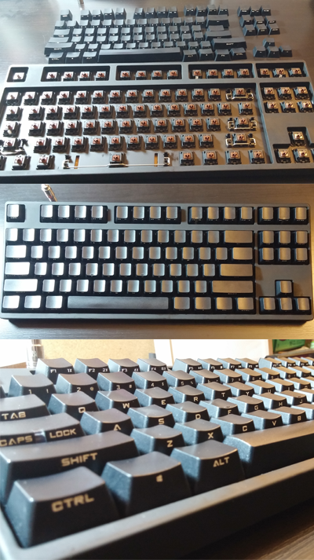

Mechanical Keyboards just because I love mine date posted 05/07/2015 14:14
My boyfriend built my PC a few months ago, but my favorite part of the setup, is definitely the keyboard. Although, it doesn't help that I already type loud to begin with (I'm working on it), there's something so satisfying about typing on a mechanical one. Unfortunately, my internet connection restricts me from playing a lot of games, it still gets me through a couple rounds of League of Legends.
Okay, back to the keyboards. This is what my keyboard looks like. It's a CM Storm Rapidfire Stealth. Cherry MX Browns with rubber o-rings, tenkeyless. For the purpose of this blog post, I'll mainly talk about this specific build and some general keyboard information.

Before building my keyboard, we tested out what kind of 'feel' (aka tactile feedback), I wanted for the keys using a tester that looks likethis. Just like any piece of hardware, there are multiple brands and builds you can get. There are also different types of keyboards such as full-sized, tenkeyless, and 60%. I prefer the tenkeyless keyboards because of the arrow keys. On the smaller keyboards, the WASD keys act as the arrow keys. Although the smaller keyboards allow for more customization and less space to type over, I like having my keys separate.
My switches are Cherry MX Browns. Other types include Cherry MX Blues and Reds. As mentioned earlier, the main difference between switches is the tactile feedback and the sound the keys make. Type something random on your computer, there's a feel to the keys. When I would type papers for school, I used to prefer the flat Mac-like keyboards, it was really easy to move around the keyboard, and I didn't feel the need to 'bottom-out' the keys. (Bottoming-out means pressing the keys all the way down). When I was first introduced to PC-gaming, it felt like I was breaking my keyboard at sometimes. For those that don't understand what I'm talking about, imagine your friend/cousin/relative playing on a game controller and button smashing. Now imagine doing that to your keyboard and then imagine it breaking a lot sooner after the wear and tear.
Having a mechanical keyboard can help with the wear and tear because they're more durable. Here are the differences between the Cherry MXs:
Cherry MX Brown: No click sound, tactile feedback when pressed
Cherry MX Blues: High click sound, tactile feedback when pressed
Cherry MX Reds: no tactile feedback when pressed
I'm not a huge expert on keyboards but doing the research has definitely helped me learn about this little world of switches and builds. I hope you learned something and if you want to know more, head over here -- > For more information on keyboards, you can checkout this subreddit reddit.com/r/mechanicalkeyboards.
{kind=link}